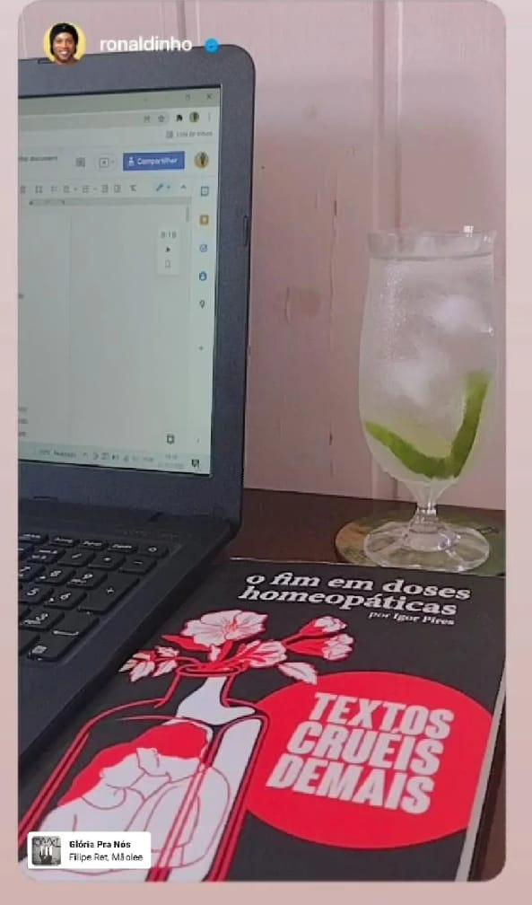

Relatos da pandemia por:
Sunhine

Lugar de estudar em casa

Lugar de estudar no IF
Sunshine explica: “Houve uma mudança bem significativa nessas duas fotos. Quando estávamos no EAD, muitas vezes me sentia ‘para baixo' por não conseguir entender o conteúdo, por ter várias demandas e etc. Mas logo que voltamos para o presencial, pude perceber o quanto era importante e necessário termos esse contato com os professores, pois até a forma que eles nos passam os conteúdos, são diferentes. Sinto mais gosto de aprender e entender quaisquer exercícios e conteúdo”.